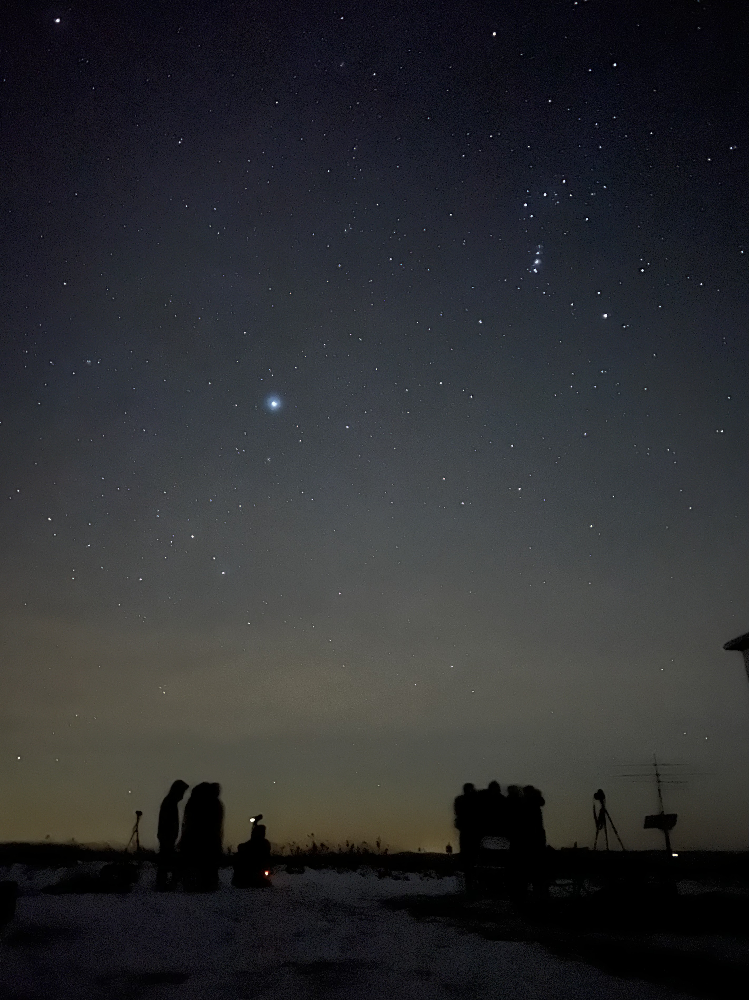

I used to be really scared of walking on campus at night. Shadows of the many trees next to the concrete sidewalks extended far too high. Even the quietest of sounds spiked anxiety in me, as I feared the source and how little I knew about it. Sometimes, I would phone a friend and ask them to accompany me on the short walk back home, comforted by the fact that I was no longer completely alone. The bigger my presence was, the more I was convinced whoever was out to harm me would reconsider their decision.
Yet more often than not, I could not depend on someone to be readily available, leaving me to make the journey on my own. Walking home in the dark, often rainy and cold air, has quickly become a staple experience throughout my time so far at college. Despite my persisting anxieties during these walks, I have found endless peace in embracing the beauty of these little moments. This blog piece is a collection of some of the hidden pieces of joy I have been able to uncover in the dark.
12.13.2023 (Leaps & Bounds)
As I sprinted down the stairs of my dormitory, my mind raced with worry, wondering how I could have been so absent-minded to leave the dining hall without my backpack. Surely no one would have taken it, right? I pushed the door open and was met by a gust of cold winter air - I had forgotten to take a jacket with me.
However, as I ran toward the dining hall, my fear of losing the laptop in my bag and the fear of catching a cold quickly slipped away. Maybe it was because of the new sneakers, or the adrenaline, or the fact that I hadn’t run in a while, but every step I took felt like a boost of power that propelled me forward. I could not see where my steps were landing, nor where the pavement met the grass, but it hardly mattered at the moment.
The wind whistling past me reminded me of a night when I was still in elementary school. My dad took me out after dinner to go for a run. I remember running as fast as I could with my dad on the empty circular track at the high school, feeling the air brush the skin on my face as my feet met with the ground. At that time, I felt like the fastest person in the world, able to keep pace with my much taller, much more grown, much stronger father.
Both then and now, the crisp, sharp air surging through my lungs with every breath, cycled through my body, cleaning everything out and replacing it with new. New air, new life –- I felt free. In just a few seconds, I felt unexpected pure joy from simply moving and being human. I felt like I could finally breathe.
10.07.2023 (Miraculous Warmth)
Part of the fall retreat of my Christian fellowship, AAIV, was a ROS (Retreat of Solitude). This part was a dedicated two hours of silence where everyone on site was directed to spend time by themself, with God.
That weekend, it was cold and would not stop raining. I thought it would be fine with a thin windbreaker and umbrella, but every time I stepped outside, I was blasted with a gust of wind that seemed to enter through my clothes, penetrating directly into my soul. When we were released to go off on our own in silence, though, I didn’t feel like going back to the lodge. Rather, I set off in the other direction to find a place to settle.
I took my umbrella, zipped my jacket up, and started to walk. For much of the time, I found myself wandering outside on the trails of the retreat’s camp surrounded by tall trees on either side. I walked slowly, focusing on the wet leaves-covered pavement, and talked to God, spilling all my thoughts and troubles out to Him, confessing my mistakes, and asking Him for guidance. It was the first time I had ever spent so long talking to Him, and it was the first time in a while that I had truly reflected on myself and my relationship with Him.
Before I knew it, almost two hours had passed and I made my way back to the lodge to get ready for lunch. Then, as I walked out of the building once again, I suddenly became aware of how cold it was outside. Was it this cold five minutes ago? Part of me reasoned that I could have been feeling the contrast of temperature after spending a few minutes inside. But the other part of me knows that I felt miraculously warm on my walk with God as if being with Him at that moment somehow was a shield from the cold.
12.15.2023 (Meteor Shower)
Late at night on December 14th, two of my friends and I drove off-campus to the Hartung-Boothroyd Observatory to watch the 2023 Geminids meteor shower. It was just two days before I would return home for a month of winter break.
All bundled up, we lay on the frozen ice-covered grass staring at the vast canopy of stars above us. Aside from the occasional observation of how cold it was and the more frequent “Did you see that?” “Where?” there were several long periods of silence as we gazed in astonishment. The sky seemed so infinite, so close, and so far. Every time a meteor flew across the sky, it was as if the dark canvas lit up and came alive for a small moment before all was still again.
At some point, we sat up to drink some of the hot cider one of my friends had brought from home. Taking the cup and briefly uncovering the scarf wrapped around my face, I drank and let warmth fill my body before lying back down. The warm cider eventually ceased to give me warmth, but it did not matter. I had never felt such complete serenity in the total darkness and cold.

09.09.2024 (Fireworks In The Rain)
We get a few different types of rain in Ithaca: misty rain, sudden downpour rain, drizzling rain, solid rain (aka hail), windy rain, and so on. The second best rain (the first best is summer rain) is when it is raining, enough that I can say “it is raining” but not so much to the point where I have to hurry to find shelter. Despite having experienced the endlessly confusing and unpredictable weather here, there are still times when I forget to bring my umbrella to classes on suspiciously cloudy days, inevitably continuing to get caught up in the rain.
At the beginning of this semester, there was a day I found myself walking home alone after a bible study and it was raining. I reached for the side pocket that usually contains my umbrella to find that there was nothing there. So, I took a deep breath, pulled the hood of my jacket over my head, made sure my bag was zipped up, and stepped out from the overhang of the building.
As I waited at the corner of an intersection watching the pedestrian signal for any change, I stood. Still.
The sound of rain that typically would hit the top of my umbrella hit the hood of my jacket, amplifying the rhythmic pitter-patter. The uneven harmony created by each drop surrounded me, and I briefly closed my eyes, I felt like I had been transported back to the annual Fourth of July fireworks show at the village pool back at home. That show was never something that I would look fondly back on, but at this moment, feelings of excitement and nostalgia stirred within me, and I felt truly and undeniably content.